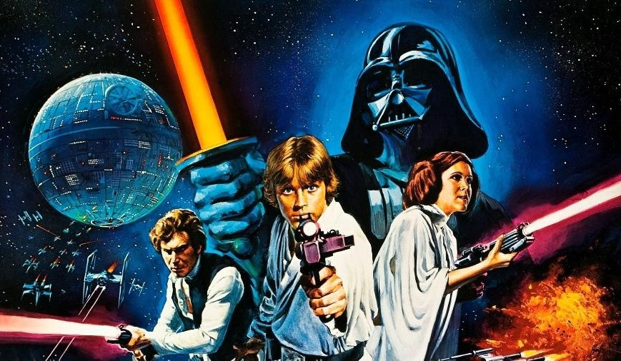
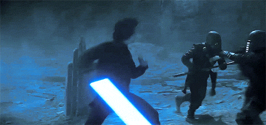
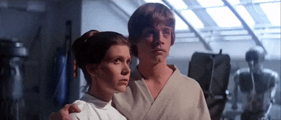
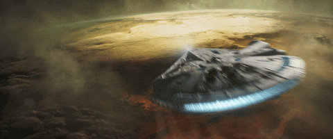

Por que Star Wars é a melhor obra do século.
Razões pelas quais você deveria assistir:

Personagens Memoráveis:
A saga apresenta uma variedade de personagens incriveis, cada um com sua própria personalidade, traumas e
transtornos psicologicos.
Desde heróis como Luke Skywalker e Princesa Leia até vilões como Darth Vader,
Imperador Palpatine e Kylo Ren os personagens desempenham um papel fundamental no apelo duradouro da série.

Efeitos Especiais Inovadores:
"Star Wars" foi pioneiro em efeitos especiais inovadores, especialmente nos filmes originais lançados na
década de 1970 e 1980. A revolução tecnológica na época teve um impacto duradouro na indústria cinematográfica,
e muitas das técnicas desenvolvidas
para os filmes de "Star Wars" continuam a influenciar a produção cinematográfica hoje.
Trilha Sonora Inesquecível:
A música de John Williams para "Star Wars" é uma das trilhas sonoras mais reconhecíveis e amadas na história do
cinema.
A pontuação épica contribui significativamente para a atmosfera e o impacto emocional dos filmes.

Temas Universais:
"Star Wars" aborda como o conflito entre o bem e o mal, a jornada do herói, amizade, lealdade,
redenção e a luta contra a opressão. Esses temas ressoam com públicos de todas as idades e culturas.
Expansão do Universo:
Além dos filmes, "Star Wars" expandiu seu universo através de séries de TV, livros, quadrinhos e outros meios.
Isso permite que os fãs explorem ainda mais a galáxia distante e se envolvam em histórias mais detalhadas sobre
seus personagens favoritos.

Impacto Cultural Duradouro:
"Star Wars" teve um impacto significativo na cultura pop desde o lançamento do primeiro filme em 1977. Seus
personagens, citações,
naves espaciais e elementos visuais tornaram-se ícones reconhecíveis em todo o mundo.